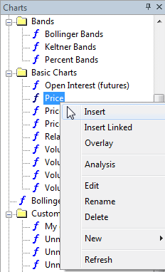
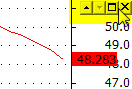
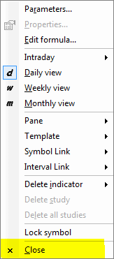
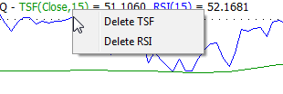
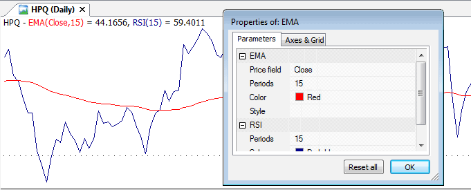
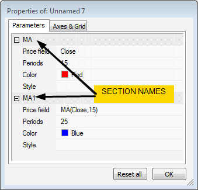
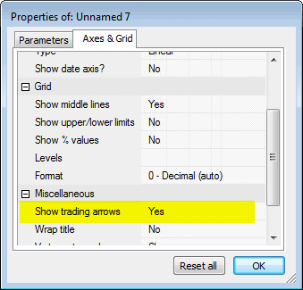

AmiBroker allows you to easily create and modify your indicators with a few moves of a mouse. From now on you can build sophisticated indicators without any programming knowledge at all. The available (ready-to-use) indicators are listed in the Charts tab of the Workspace window.
There is a video tutorial at: http://www.amibroker.net/video/dragdrop1.html that shows basic usage of new drag-and-drop functionality.
How to insert a new indicator.
To display a new indicator in a separate chart pane, just find the indicator in the Charts list (use Window -> Charts menu) and double-click the indicator name.

Alternatively, you can choose Insert from
the context
menu.
As a result, a new indicator pane will be created and the Parameters dialog
will be displayed. Here you can change the properties of the indicator
(like color or periods). To accept the settings, press the OK button.
(You will find the detailed description of the Parameters window below).
Example:
To insert an RSI pane - find the RSI indicator in the list, double-click the
name, select the number of periods and color, then press OK.
How to overlay one indicator on another indicator.
Alternatively, you can choose Overlay option from the context menu.
How to delete the indicator.
To remove the indicator, press the Close button from the menu at the top right-hand side of the indicator pane (the menu will be displayed if you place the mouse cursor nearby). This menu also allows you to move the indicator pane up/down or maximize the pane.

You can also use the Close command from the context menu that shows
up when you click the chart pane with the right mouse button.

How to remove the indicator plot from the pane.

You can also remove the indicator plot using the Delete Indicator option
from the chart context menu.

NOTE: The part below contains technical information for
advanced users only. Beginners may skip this part.
_
Example:
The indicator below allows you to check how the parameters work in the custom code. You can change settings from the Parameters dialog.
Buy = Cross(MACD(), Signal()
);
Sell = Cross(Signal(), MACD()
);
pricefield = ParamField("Price
Field", 2);
Color = ParamColor("color",colorRed);
style = ParamStyle("style",styleLine,maskAll);
arrows = ParamToggle("Display
arrows", "No|Yes",0);
Plot(pricefield,"My
Indicator",Color,style);
if(arrows)
{
PlotShapes(Buy*shapeUpArrow+Sell*shapeDownArrow,IIf(Buy,colorGreen,colorRed)
);
}
These are new functions that are used by the drag-and-drop mechanism. The most important pair is _SECTION_BEGIN("name") and _SECTION_END().
When you drop the formula onto a chart pane, AmiBroker appends the formula you have dragged at the end of the existing chart formula and wraps the inserted code with _SECTION_BEGIN("name") and _SECTION_END() markers:
So, if the original formula looks as follows:
P = ParamField("Price
field",-1);
Periods = Param("Periods", 15, 2, 200, 1, 10 );
Plot( MA(
P, Periods ), _DEFAULT_NAME(), ParamColor( "Color",
colorCycle ), ParamStyle("Style")
);
it will be transformed by AmiBroker to:
_SECTION_BEGIN("MA");
P = ParamField("Price
field",-1);
Periods = Param("Periods", 15, 2, 200, 1, 10 );
Plot( MA(
P, Periods ), _DEFAULT_NAME(), ParamColor( "Color",
colorCycle ), ParamStyle("Style")
);
_SECTION_END();
_SECTION_BEGIN/_SECTION_END markers allow AmiBroker to identify code parts and modify them later (for example, remove individual sections). In addition to that, sections provide the way to make sure that parameters having the same name in many code parts do not interfere with each other. For example, if you drop two moving averages, the resulting code will look as follows:
_SECTION_BEGIN("MA");
P = ParamField("Price
field",-1);
Periods = Param("Periods", 15, 2, 200, 1, 10 );
Plot( MA(
P, Periods ), _DEFAULT_NAME(), ParamColor( "Color",
colorCycle ), ParamStyle("Style")
);
_SECTION_END();
_SECTION_BEGIN("MA1");
P = ParamField("Price
field",-1);
Periods = Param("Periods", 15, 2, 200, 1, 10 );
Plot( MA(
P, Periods ), _DEFAULT_NAME(), ParamColor( "Color",
colorCycle ), ParamStyle("Style")
);
_SECTION_END();
Note that code and parameter names are identical in both parts. Without
sections, parameters with the same name will interfere. But thanks to uniquely
named sections, there is no conflict. This is so because AmiBroker identifies
the parameter using both the section name AND the parameter name, so if section names are
unique, then parameters can be uniquely identified. When dropping an indicator,
AmiBroker automatically checks for already-existing section names and auto-numbers
similarly named sections to avoid conflicts. The section name also appears in the
Parameters dialog:

Last but not least, you should NOT remove _SECTION_BEGIN / _SECTION_END markers from the formula. If you do, AmiBroker will not be able to recognize sections inside a given formula anymore and parameters with the same name will interfere with each other.
_SECTION_NAME is a function that just gives the name of the section (given in the previous _SECTION_BEGIN call).
_DEFAULT_NAME is a function that returns the default name of the plot. The default name consists of the section name and a comma-separated list of values of numeric parameters defined in the given section. For example, in the following code:
_SECTION_BEGIN("MA1");
P = ParamField("Price
field");
Periods = Param("Periods", 15, 2, 200, 1, 10 );
Plot( MA(
P, Periods ), _DEFAULT_NAME(), ParamColor( "Color",
colorCycle ), ParamStyle("Style")
);
_SECTION_END();
_DEFAULT_NAME will evaluate to "MA1(Close,15)".
_PARAM_VALUES works the same as _DEFAULT_NAME except that no section name is included (so only the list of parameter values is returned). So, in the above example, _PARAM_VALUES will evaluate to "(Close, 15)".
Q. What is the difference between Insert and Insert Linked options in the chart menu?
A. Insert command internally creates a copy of the original
formula file and places such a copy into a hidden drag-and-drop folder, so the original
formula will not be affected by subsequent editing or overlaying other
indicators onto it.
Double-clicking a formula name in the chart tree is equivalent to choosing
the Insert command from the menu. On the other hand, the Insert Linked command
does not create a copy of the formula. Instead, it creates a new chart pane
that
directly
links
to the original
formula. This way, subsequent editing and/or overlaying other indicators
will modify the original formula.
Q. I cannot see buy/sell arrows from my trading system
A. Trade arrows can be displayed on any chart pane (not only the built-in price chart). However, by default, the arrow display is turned OFF. To turn it ON, you have to open the Parameters dialog, switch to "Axes and grid" and switch the "Show trading arrows" option to "Yes".

Q. The ReadMe says: "Automatic Analysis formula window is now drag-and-drop target too (you can drag formulas and AFL files onto it)". What does it mean?
A. It means that you can drag the formula from either the Chart tree or an .AFL file from Windows Explorer and drop it onto the Automatic Analysis (AA) formula window and it will load a formula into the AA window. This is an alternative to loading a formula via the "Load" button in the AA window.
Q. Can I drop a shortcut onto the formula window?
A: No, you cannot. You can only drag-and-drop files with the .AFL extension (shortcuts in Windows have the .lnk extension).
Q. Can I add my own formulas to the Chart tree?
A. Yes, you can. Simply save your .AFL formula into the Formulas subfolder of the AmiBroker
directory and it will appear under the "Charts" tree (View->Refresh
All may be needed
to re-read the directory if you are using an external editor).
Q. I have added a new file to the Formulas folder, but it doesn't show up in the Charts tree unless I restart AmiBroker? Is there a way to refresh the Chart tree?
A. You can refresh the Chart tree by choosing the View->Refresh All menu.
Q. If I modify the formula that ships with AmiBroker, will it be overwritten by the next upgrade?
A. Yes, it will be overwritten. If you wish to make any modifications to the formulas provided with AmiBroker, please save your modified versions under a new name or (better) in your own custom subfolder.
Q. I can see the Reset All button in the Parameters dialog, but it sets all parameters to their default values. Is there a way to reset a SINGLE parameter?
A. No, there is no such option yet, but it will be added in upcoming betas.
Q. I dragged RSI to the price chart pane and got a straight red line at the bottom of the pane. What is wrong?
A. When you drop two indicators/plots that have drastically different values, you have to use style OwnScale for one of them. You can turn on the OwnScale style using the Parameters dialog. This ensures that the scales used for each are independent and you can see them properly. Otherwise, they use one common scale that fits both value ranges, which results in flattened plots.
Q. The light-grey color of the new AFL special functions_SECTION_BEGIN etc. makes them invisible in my blue-grey background IB color. How can I change the special functions' color?
A. Right now, you cannot. But there will be a setting for coloring special
functions in the next version.
Q. When I drop the indicator, the Parameters dialog does not show all
parameters.
Is this correct?
A. Yes, it works that way. The idea behind it is simple. When you drop a new indicator, AmiBroker displays a dialog with parameters ONLY for the currently dropped indicator. This is to make sure that newly inserted indicator parameters are clearly visible (on top) and a new user is not overwhelmed by tens of other parameters referring to previously dropped indicators. On the other hand, when you choose "Parameters" item from the context menu, then ALL parameters will show up - allowing you to modify all of them anytime later.